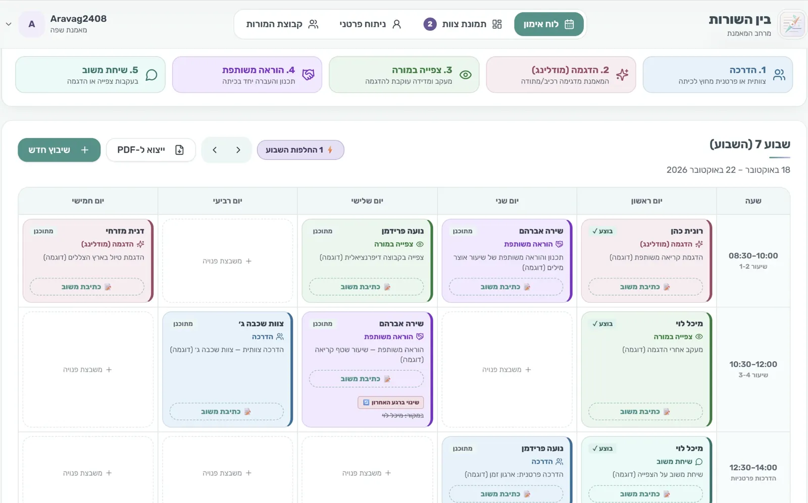

Product·Data·AI



Product decisions
Decisions
One follow-up question, not a chat
- Chose
- At most one adaptive follow-up.
- Gave up
- Depth of investigation.
- Why
- Teens drop out of long conversations.
63.6% → 69.8%overall accuracy on 162 test terms
0.52 → 0.67F1 harmful
81%needs attention